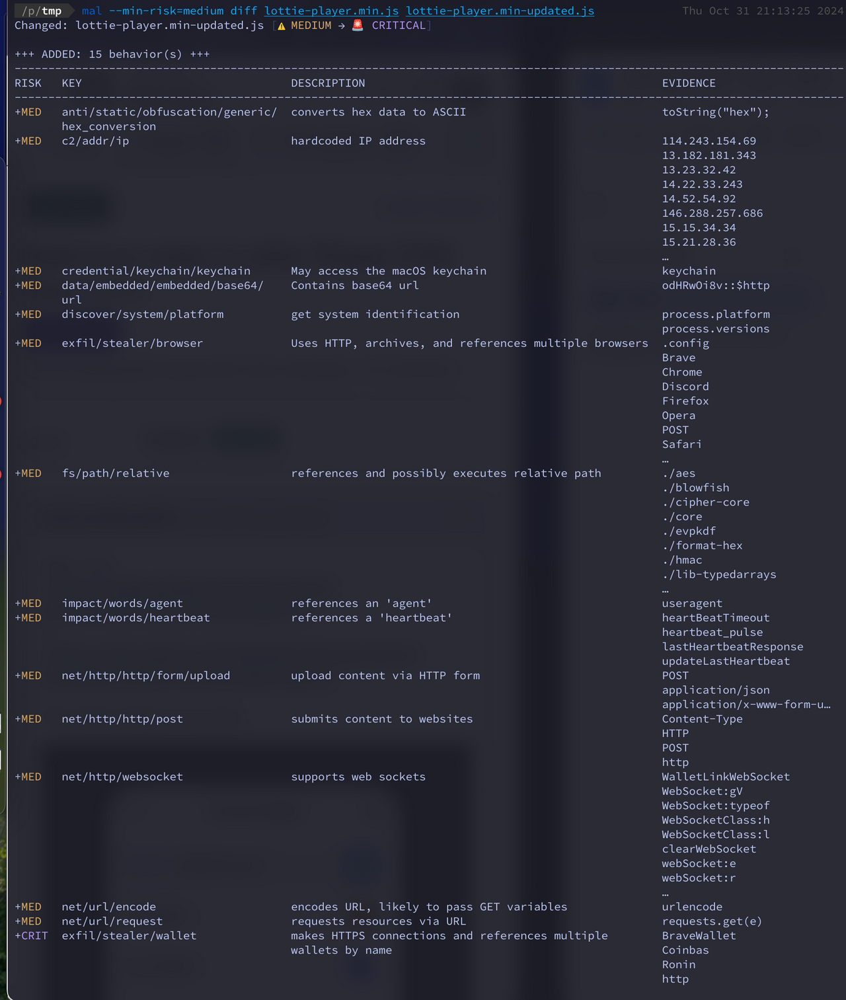

Detecting the Lottie supply-chain attack with malcontent
Some of you may have heard that there was another supply-chain attack against an open-source project yesterday - this time in a Javascript library called Lottie Web Player.
I have yet to talk much about it, but earlier this year I started an open-source project named malcontent that detects precisely this kind of attack: malicious changes in open-source software. This is very relevant to my day job at Chainguard.
malcontent summarizes the risks and capabilities of a file and alerts when a new version substantially changes those risks and capabilities. It's easier to show you with a screenshot:

In a nutshell: mal diff calculated that the risk of file went from MEDIUM to CRITICAL between two revisions. In doing so, it surfaced a number of new behaviors that would catch the eye of a code reviewer. The idea here is that no tool will be able to give you a 100% reliable answer to “Is it malicious or not?” but as a code reviewer, you have the context of what functionality changes are reasonable to you for the library you are consuming.
malcontent works on any file you might encounter in open source, from shell scripts to Linux ELF binaries to macOS machO binaries and PHP. While we’ve incorporated over 15,000 YARA rules, we're far from the same quality level as VirusTotal; so if you are handy in YARA or Go or would like to learn more about them, PRs are welcome!
PS - malcontent can also be used as a basic malware scanner - but it isn’t yet as impressive as the “diff” mode: mal scan /path